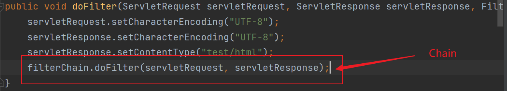

笔记内容出自：https://www.bilibili.com/video/BV12J411M7Sj
JavaWeb概述
静态Web
Web服务器
技术问题：
ASP：
ASP是最早流行的Web服务器，使用C#语言
php
注：php的安全性也不高
JSP/Servlet
jsp就是在html代码里嵌入一些java代码
三高：高并发，高可用，高性能
Web服务器
IIS
微软的；Windows自带，常用于搭建FTP文件服务器
Tomcat
现在最新版本是10.0.1
文件夹作用
shutdown.bat关闭
配置
Tomcat核心配置文件是conf文件夹下的server.xml文件
HTTP
请求有两种，请求行和请求头
响应也有两种，响应头和响应体
Maven
Maven— 项目架构管理工具
目前用来便捷的导入jar包
Maven核心思想：约定大于配置
Maven会规定好如何去编写java代码，必须按这个规范来
下载地址：https://maven.apache.org/download.cgi
环境变量以及换源自行配置
配置本地仓库
如图，在该位置将路径改为自己设定的文件夹
在idea中使用


打包分两种：war和jar
war：javaweb应用
jar：java应用
Servlet程序
是运行在 Web 服务器或应用服务器上的程序，它是作为来自 Web 浏览器或其他 HTTP 客户端的请求和 HTTP 服务器上的数据库或应用程序之间的中间层。
使用 Servlet，可以收集来自网页表单的用户输入，呈现来自数据库或者其他源的记录，还可以动态创建网页。
Servlet是一个接口，我们把实现了该接口的java程序叫Servlet
HelloServlet
1、构建一个普通的Maven项目，可以删除src目标，用建立Moudel的方式建立多个工程
2、Maven工程可以嵌套
优化：
修改web.xml为最新版本
将maven的结构搭建完整
Serlvet 实现
Serlvet接口有两个实现类
继承HttpServlet
public class HelloServlet extends HttpServlet {
@Override
protected void doGet(HttpServletRequest req, HttpServletResponse resp) throws ServletException, IOException {
//响应类型
resp.setContentType("text/html");
//获取输出流
PrintWriter writer = resp.getWriter();
writer.println("<h1>这是继承HttpServlet接口</h1>");
}
@Override
protected void doPost(HttpServletRequest req, HttpServletResponse resp) throws ServletException, IOException {
doGet(req,resp);
}
}
继承GenericServlet
public class 继承GenericServlet extends GenericServlet {
@Override
public void service(ServletRequest servletRequest, ServletResponse servletResponse) throws ServletException, IOException {
}
}
GenericServlet直接实现了Servlet接口，使用时需要重写service方法
HttpServlet继承GenericServlet类,它重写了service方法
所以使用Servlet接口我们一般==继承HttpServlet==，而不是GenericServlet和直接实现Servlet
结构
Servlet方法实现
继承HttpServlet类无需实现service
但作为网页最常用的get和post传参，我们一般需要实现doGet()和doPost()方法
public class HelloServlet extends HttpServlet {
@Override
protected void doGet(HttpServletRequest req, HttpServletResponse resp) throws ServletException, IOException {
doPost(req, resp);
}
@Override
protected void doPost(HttpServletRequest req, HttpServletResponse resp) throws ServletException, IOException {
super.doPost(req, resp);
}
}
//一般我们只会用到get或post其一，所以将另一个直接调回即可
注册Servlet
写好的Servlet是存放在java中的，但浏览器这样访问过于麻烦也不安全，所以需要注册该Servlet映射，也叫定义路径
一个Servlet对应一个请求地址
web.xml(路径在这里定义)
<web-app>
<display-name>Archetype Created Web Application</display-name>
<!-- 注册servlet-->
<servlet>
<servlet-name>helloServlet</servlet-name>
<servlet-class>org.atmujie.Servlet.HelloServlet</servlet-class>
</servlet>
<!-- 一个servlet对应一个mapping映射-->
<servlet-mapping>
<servlet-name>helloServlet</servlet-name>
<url-pattern>/hello</url-pattern>
</servlet-mapping>
</web-app>
public class HelloServlet extends HttpServlet {
@Override
protected void doGet(HttpServletRequest req, HttpServletResponse resp) throws ServletException, IOException {
//开启响应流
PrintWriter writer = resp.getWriter();
writer.println("Hello Servlet");
}
@Override
protected void doPost(HttpServletRequest req, HttpServletResponse resp) throws ServletException, IOException {
doGet(req, resp);
}
}
Servlet原理
Servlet处理流程
java后端主要做两件事：
- 接收并处理请求
- 给出响应的信息
mapping映射规则
- 一个Servlet映射一个路径
- 一个Servlet映射多个路径
- 一个Servlet映射通用路径
- 指定前后缀映射
单路径映射
<servlet>
<servlet-name>helloServlet</servlet-name>
<servlet-class>org.atmujie.Servlet.HelloServlet</servlet-class>
</servlet>
<!-- 一个servlet对应一个mapping映射-->
<servlet-mapping>
<servlet-name>helloServlet</servlet-name>
<url-pattern>/hello</url-pattern>
</servlet-mapping>
多路径映射
一：定义多个mapping
<!-- 注册servlet-->
<servlet>
<servlet-name>helloServlet</servlet-name>
<servlet-class>org.atmujie.Servlet.HelloServlet</servlet-class>
</servlet>
<!-- 一个servlet对应多个mapping映射-->
<servlet-mapping>
<servlet-name>helloServlet</servlet-name>
<url-pattern>/hello</url-pattern>
</servlet-mapping>
<servlet-mapping>
<servlet-name>helloServlet</servlet-name>
<url-pattern>/hi</url-pattern>
</servlet-mapping>
二：定义通配符
<servlet-mapping>
<servlet-name>helloServlet</servlet-name>
<url-pattern>/hello/*</url-pattern>
</servlet-mapping>
默认路径
<servlet-mapping>
<servlet-name>helloServlet</servlet-name>
<url-pattern>/*</url-pattern>
</servlet-mapping>
</web-app>
举例：通过默认路径可以规定404页面
前后缀映射
前缀
<servlet-mapping>
<servlet-name>helloServlet</servlet-name>
<url-pattern>/a/*</url-pattern>
</servlet-mapping>
后缀
<servlet-mapping>
<servlet-name>helloServlet</servlet-name>
<url-pattern>*.aaaaaa</url-pattern>
</servlet-mapping>
注意：后缀不能写为/开头的格式，例如/*.mujie，/hi/*.aaa等
前缀通配符前不能有字母如/a*等
ServletContext对象
即Servlet上下文对象，同一项目中的多个Servlet之间是无法直接通信的，ServletContext就起到一个中间商的作用，通过它可以实现Serlvet之间的通信，它凌驾于所有Servlet之上且全局唯一
举例：ServletContext可以实现数据共享
//HelloServlet
protected void doGet(HttpServletRequest req, HttpServletResponse resp) throws ServletException, IOException {
//设置一个数据
String name = "Mujie";
//将数据放入ServletContext，名字为a，值为name
servletContext.setAttribute("a",name);
}
//ServletContexts
protected void doGet(HttpServletRequest req, HttpServletResponse resp) throws ServletException, IOException {
ServletContext servletContext = this.getServletContext();
resp.setContentType("text/html");
resp.setCharacterEncoding("utf-8");
String a = (String) servletContext.getAttribute("a");
resp.getWriter().println("我是"+ a);
}
<servlet>
<servlet-name>helloServlet</servlet-name>
<servlet-class>org.atmujie.Servlet.HelloServlet</servlet-class>
</servlet>
<servlet>
<servlet-name>get</servlet-name>
<servlet-class>org.atmujie.Servlet.ServletContexts</servlet-class>
</servlet>
<servlet-mapping>
<servlet-name>helloServlet</servlet-name>
<url-pattern>/hello</url-pattern>
</servlet-mapping>
<servlet-mapping>
<servlet-name>get</servlet-name>
<url-pattern>/get</url-pattern>
</servlet-mapping>
请求转发
protected void doGet(HttpServletRequest req, HttpServletResponse resp) throws ServletException, IOException {
ServletContext servletContext = this.getServletContext();
//请求转发
servletContext.getRequestDispatcher("/hello").forward(req, resp);
}
请求转发时路径不会变，以上面代码为例，转发只是将该路径/hello的资源拿过来
设客户端为A,请求页面为B,转发页面为C,请求转发和重定向的关系如图所示
请求转发本质上A并没有拿到C,”请求”C的是B，与A无关，所以A请求的页面始终为B
Properites 类
Properties 类位于 java.util.Properties ，是Java 语言的配置文件所使用的类， ==Xxx.properties 为Java 语言常见的配置文件==
数据库的配置 jdbc.properties, 系统参数配置 system.properties
资源文件周知
资源文件properites一般放在resource文件中
- java目录构建properties需要配置pom.xml中的build选项，否则Maven无法正常导出
- 在java和eresource目录下构建的properites文件都会被打包到classes路径下，我们俗称这个路径为classpath，即类路径

protected void doGet(HttpServletRequest req, HttpServletResponse resp) throws ServletException, IOException {
//获取文件流 /*将资源作为流获取*/
InputStream resourceAsStream = this.getServletContext().getResourceAsStream("/WEB-INF/classes/db.properties");
//路径也可以写为/resources/db.properties
//new Properites
Properties properites = new Properties();
//使用pro类加载配置文件流
properites.load(resourceAsStream);
//获取配置
String name = properites.getProperty("name");
resp.getWriter().println("Name:" + name);
}
HttpServletResponse 与 HttpServletRequest
//获取输出流，写一般流时使用
ServletOutputStream getOutputStream() throws IOException;
//同样获取输出流，写中文时使用，其他流不建议使用，容易造成数据丢失
PrintWriter getWriter() throws IOException;
还可以设置响应的请求头，状态码等
常见应用
- 向浏览器中输出消息
- 下载文件
Response 下载文件
public class Response响应 extends HttpServlet {
@Override
protected void doPost(HttpServletRequest req, HttpServletResponse resp) throws ServletException, IOException {
doGet(req, resp);
}
@Override
protected void doGet(HttpServletRequest req, HttpServletResponse resp) throws ServletException, IOException {
//获取文件路径
String path = "C:\\Users\\MuJie\\Downloads\\google\\测试.txt";
//设置下载文件名
String fileName = "1.txt";
//返回浏览器下载请求
resp.setHeader("content-disposition", "attachment;fileName="+ URLEncoder.encode(fileName,"UTF-8"));
//把文件变成文件流
FileInputStream fileInputStream = new FileInputStream(path);
//创建缓冲区
byte[] bytes = new byte[1024];
//获取输出流
ServletOutputStream outputStream = resp.getOutputStream();
//将文件流写入输出流
int len = 0;
while ((len = fileInputStream.read(bytes)) > 0){
outputStream.write(bytes,0,len);
}
//关闭流
outputStream.close();
fileInputStream.close();
}
}
获取的文件路径和文件名我上面是手写的，但实际开发中显然并不适用，所以再写一个实时获取
/*通过ServletContext定位文件相对路径*/
String path = this.getServletContext().getRealPath("/resources/1.txt");
//设置下载文件名
String fileName = path.substring(path.lastIndexOf("\\") + 1);
注意：
在使用ServletContext.getRealPath() 时，传入的参数是从 当前servlet 部署在tomcat中的文件夹算起的相对路径，要以”/“ 开头，否则会找不到路径，导致NullPointerException
read(byte[] b)这个方法是先规定一个数组长度，将这个流中的字节缓冲到数组b中，返回的这个数组中的字节个数，这个缓冲区没有满的话，则返回真实的字节个数，到未尾时都返回-1
是一个web应用对应一个ServletContext，所以ServletContext的作用范围是整个应用.ServletContext实例包含了所有servlet共享的资源信息。通过提供一组方法给servlet使用，用来和servlet容器通讯，比如获取文件的MIME类型、分发请求、记录日志等。
这里需要注意一点，如果你的应用是分布式部署的，那么每台服务器实例上部署的应用实例都各自拥有一个ServletContext实例。lastIndexOf()方法的返回值是指定子字符串在字符串中第一次出现处的索引值。
substring()方法根据指定索引截取字符串
Response 实现验证码
@Override
protected void doGet(HttpServletRequest req, HttpServletResponse resp) throws ServletException, IOException {
//设置浏览器自动刷新
resp.setHeader("refresh","60");
//在内存中创建一个图片
BufferedImage bufferedImage = new BufferedImage(80, 20, BufferedImage.TYPE_3BYTE_BGR);
//获取画笔对象
Graphics2D graphics = (Graphics2D) bufferedImage.getGraphics();
//设置图片背景颜色
graphics.setColor(Color.BLUE);
graphics.fillRect(0,0,80,20);
//给图片写数据
graphics.setColor(Color.BLACK);
graphics.setFont(new Font(null,Font.BOLD,20));
graphics.drawString(randomNum(),0,20);
//告诉浏览器这是个图片
resp.setContentType("image/jpeg");
//取消网站缓存
resp.setDateHeader("expires",-1);
resp.setHeader("Cache-Control","no-cache");
resp.setHeader("Pragma","no-cache");
//将图片写给浏览器
ImageIO.write(bufferedImage,"jpg",resp.getOutputStream());
}
//验证码随机数
private String randomNum(){
Random random = new Random();
int i1 = random.nextInt(999999);
String randNum = String.valueOf(i1);
StringBuffer stringBuffer = new StringBuffer();
for (int i = randNum.length(); i < 4; i++) {
stringBuffer.append("0");
}
return stringBuffer.toString() + randNum;
}
注意
- String的值是不可变的，这就导致每次对String的操作都会生成新的String对象，不仅效率低下，而且浪费大量优先的内存空间
StringBuffer是可变类，和线程安全的字符串操作类，任何对它指向的字符串的操作都不会产生新的对象。每个StringBuffer对象都有一定的缓冲区容量，当字符串大小没有超过容量时，不会分配新的容量，当字符串大小超过容量时，会自动增加容量
简单来说，String定义之后不可修改，StringBuffer定义后可以像操作数组一样随意删减字符 - 图片的宽高是从左上角为坐标原点，而文字是右下角
重定向
resp.sendRedirect("项目路径");
重定向不同于请求转发，重定向页面跳转url会发生变化
原理
resp.setHeader("Location","项目路径");
resp.setStatus(302);
Request 获取参数
@Override
protected void doPost(HttpServletRequest req, HttpServletResponse resp) throws ServletException, IOException {
String username = req.getParameter("username");
resp.getWriter().println(username);
}
注意
- javaweb的运行终归是运行编译后的war包，所以项目路径是从war包的包名开始，而不是java文件的路径
- 404错误只是说明没有找到文件，是路径错误
Request 主要有两个任务，获取数据和请求转发
Request 获取数据与重定向
protected void doPost(HttpServletRequest req, HttpServletResponse resp) throws ServletException, IOException {
resp.setCharacterEncoding("utf-8");
req.setCharacterEncoding("UTF-8");
//获取数据
String name = req.getParameter("username");
String password = req.getParameter("password");
String[] has = req.getParameterValues("has");
System.out.println(name + ":" + password + "=>" + Arrays.toString(has));
//重定向
req.getRequestDispatcher("/success.jsp").forward(req, resp);
}
- getRequestDispatcher()方法中写入
\会自动处理为项目设置的路径
Cookie、Session
会话
会话
- 用户打开浏览器，点击很多超链接 ，访问多个web资源后关闭浏览器的过程可以称为会话
有状态会话
==Cookie与Session的简单理解==
有状态会话就像上图所述：
一个客户端访问了服务器，服务器就会知道这个客户，下次这个客户端再来，服务器会知道它曾经来过，这就叫有状态会话
保存会话的两种技术
cookie
- 客户端技术。通过请求和响应
session
- 服务器行为。保存用户的会话信息
Cookie
Cookie相关类
protected void doPost(HttpServletRequest req, HttpServletResponse resp) throws ServletException, IOException {
req.setCharacterEncoding("UTF-8");
resp.setCharacterEncoding("UTF-8");
//获取cookie
Cookie[] cookies = req.getCookies();
//判断是否存在值
if(cookies != null){
for (int i = 0; i < cookies.length; i++) {
Cookie cookie = cookies[i];
if (cookie.getName().equals("lastLoginTime")){
long lastLoginTime = Long.parseLong(cookie.getValue());
resp.getWriter().write("你上次访问的时间是："+ new Date(lastLoginTime).toLocaleString());
}
}
} else {
resp.getWriter().write("你是第一次登录本网站");
}
//返回新Cookie
Cookie lastLoginTime = new Cookie("lastLoginTime", System.currentTimeMillis() + "");
resp.addCookie(lastLoginTime);
}
Session
Session在打开浏览器时就已经存在，一个浏览器对应一个Session
SessionId每个用户时唯一的
Session原理
用户访问网站，网站会自动登记用户的SessionID，并将用户的会话信息储存在Session中。当用户在次访问时，服务器就可以识别到用户的SessionId
protected void doGet(HttpServletRequest req, HttpServletResponse resp) throws ServletException, IOException {
//解决乱码问题
req.setCharacterEncoding("UTF-8");
resp.setCharacterEncoding("UTF-8");
resp.setContentType("text/html;charset=utf-8");
//得到Session
HttpSession session = req.getSession();
//向Session中存储内容
session.setAttribute("name","Mujie");
//判断Session是否时新创建的
if(session.isNew()){
resp.getWriter().write("Session是最新的");
} else {
resp.getWriter().write("Session已经创建");
}
//输出SessionId
resp.getWriter().write(session.getId());
//输出Session储存的属性
resp.getWriter().write((String) session.getAttribute("name"));
}
Filter过滤器
Filter过滤器本质上也是一个Servlet服务，只是调用不同
public class Filteres implements Filter {
@Override
//初始化
public void init(FilterConfig filterConfig) throws ServletException {
Filter.super.init(filterConfig);
}
@Override
//代码部分
public void doFilter(ServletRequest servletRequest, ServletResponse servletResponse, FilterChain filterChain) throws IOException, ServletException {
}
@Override
//销毁
public void destroy() {
Filter.super.destroy();
}
}
注意
- 使用Filter需要导入包servlet
- 可以写多个过滤器
- import 时需导入serlvet
Filter特性
- Filter处理请求无需让View特意转发或重定向请求，只需在web.xml中配置路径，只要经过规定路径的请求，都将进入这个过滤器
- 注意，如果在xml中定义了路径，请求定义的路径有可能不会经过这样定义的过滤器
比如：定义路径/res，实际路径org.mujie.servlet.res.java，Filter定义如下，那么访问实际路径回经过该过滤器，而定义路径不会 - Filter是在web服务器启动时就开始初始化，在web服务器关闭时才会销毁
<filter-mapping>
<filter-name>encode</filter-name>
<!--经过过这个路径的任何请求，都将经过这个过滤器-->
<url-pattern>/servlet/*</url-pattern>
</filter-mapping>
Chain 链
- Filter过滤器需要写一个Chain，这是为了让请求和响应继续发送，而不是在过滤器中终止

JSP原理
JSP最终也会被转为Java类
JSP本质上就是一个Servlet，不过jsp简化了许多的对象，让我们的代码可以运行
源码分析
访问流程
在JSP页面中，Java代码会原封不动的输出，而Html代码会适用writer输出
<%@ page contentType="text/html;charset=UTF-8" language="java" %>
name
<%
String name = "Mujie";
%>
name:<%=name%>
JSP基础语法和命令
导入jstl
<dependency>
<groupId>org.apache.taglibs</groupId>
<artifactId>taglibs-standard-impl</artifactId>
<version>1.2.5</version>
</dependency><!-- https://mvnrepository.com/artifact/javax.servlet.jsp.jstl/jstl -->
<dependency>
<groupId>javax.servlet.jsp.jstl</groupId>
<artifactId>jstl</artifactId>
<version>1.2</version>
</dependency>
JSP作为Java技术的应用，在支持所有Java语法的同时，还有自己的一些扩充语法
JSP表达式
<%=变量或表达式%>
<%= new java.util.Date()%>
或者el表达式
${}
jsp脚本片段
- 简单说就是可以写多行代码的表达式
<%
int sum = 0;
for(int i = 1; i < 100 ; i++){
sum += i;
}
out.println("sum=" + sum + "
")
%>
或者
<%
for(int i = 0; i< 100; i++){
%>
111
<%
}
%>
写入外部（方法外部）代码【Jsp声明】
<%!
System.out.println("外部方法");
%>
适用<%! Java代码将被写在Jsp方法外，但还在类中
注释
<%--注释--%>
jsp的代码不会在客户端显示，但可以抓包分析
指令
<%@ 。。。%>
jsp指令用 <%@ 包裹，一般写在jsp文件开始，用来规定一些配置等信息，比如错误页面，继承，导包等
例如定制错误页面【建议写web.xml配置中】
<%@ page errorPage="页面路径" %>
或者
<%@ page isErrorPage="true"%>显式的说明这是一个错误页面
使用include包含页面会将两个页面合二为一
Jsp标签
jsp:include 是拼接页面，本质还是三个页面，所有设置公有页面建议用这个
九大内置对象
注意：
- application实际上就是ServletContext，只是改了个名
<%
//四种方法设置属性
pageContext.setAttribute("name1","Mujie1"); //
request.setAttribute("name2","Mujie2");
session.setAttribute("name3","Mujie");
application.setAttribute("name4","Mujie4");
%>
<%
//用一种方法取值
String name1 = (String) pageContext.findAttribute("name1");
String name2 = (String) pageContext.findAttribute("name2");
String name3 = (String) pageContext.findAttribute("name3");
String name4 = (String) pageContext.findAttribute("name4");
String name5 = (String) pageContext.findAttribute("name5");
%>
${name1}
${name2}
${name3}
${name4}
${name5}
因为java的双亲委派机制和作用域、生命周期，虽然不是一个类中的setArrbute()方法，但仍然可以调用
当在其他页面访问时，会根据作用域视情况输出
双亲委派机制，简单来说就是将请求逐级向上寻找，直到找到或者确认没有为止

各存储作用域使用场景
JSP、JSTL标签
- 类别
核心标签
格式化标签
sql标签
XML 标签
要使用Jstl标签，必须引用标签库
<%@ taglib prefix="c" uri="http://java.sun.com/jsp/jstl/core" %> // 核心标签库
Jsp标签核心库语法

JavaBean-Java组件
实体类
- 实体类和数据库中的字段一一对应
public class SqlContext {
private int id;
private String name;
private String Sex;
public SqlContext(String name, String sex) {
this.name = name;
Sex = sex;
}
public int getId() {
return id;
}
public String getName() {
return name;
}
public void setName(String name) {
this.name = name;
}
public String getSex() {
return Sex;
}
public void setSex(String sex) {
Sex = sex;
}
@Override
public String toString() {
return "SqlContext{" +
"id=" + id +
", name='" + name + '\'' +
", Sex='" + Sex + '\'' +
'}';
}
}
连接数据库
MVC三层架构
- MVC 即Model 、view 、 Controller 试图，模型，控制器
MVC架构
简单来说
- 用户只需要访问视图层
- 视图层将的操作和输入的数据发往控制器
- 控制器根据具体的数据以及处理情况，发给业务层（业务模块）处理
- 业务模块进行逻辑处理后再次发往控制器
- 由控制器将返回数据发送回视图层
- 视图层处理，输出内容